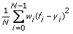
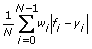
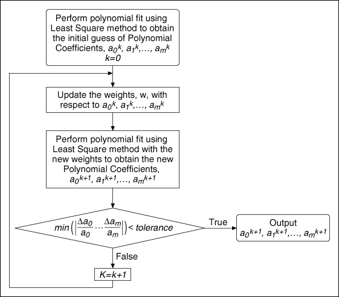

General Polynomial Fit VI
Owning Palette: Fitting VIs
Requires: Full Development System
Returns the polynomial fit of polynomial order for a data set (X, Y) using the Least Square, Least Absolute Residual, or Bisquare method.
Details Example
 Add to the block diagram Add to the block diagram |
 Find on the palette Find on the palette |
 |
Coefficient Constraint specifies the constraints on Polynomial Coefficients of certain orders by setting the coefficient of order to coefficient. Use Coefficient Constraint if you know the exact values of certain polynomial coefficients.
 |
order specifies the constrained order.
|
 |
coefficient sets the coefficient of the specified order.
|
|
|
polynomial order specifies the order of the polynomial that fits to the data set. The default is 2. polynomial order must be greater than or equal to 0. If polynomial order is less than zero, this VI sets Polynomial Coefficients to an empty array and returns an error. In real applications, polynomial order is less than 10. If polynomial order is greater than 25, the VI sets the coefficients in Polynomial Coefficients to zero and returns a warning. If polynomial order is high, a large range of X causes the polynomial fit result to diverge.
|
 |
Y is the array of dependent values. The number of sample points in Y must be greater than polynomial order. If the number of sample points is less than or equal to polynomial order, this VI sets Polynomial Coefficients to an empty array and returns an error.
|
|
X is the array of independent values. The number of sample points in X must be greater than polynomial order. If the number of sample points is less than or equal to polynomial order, this VI sets Polynomial Coefficients to an empty array and returns an error. X must be the same size as Y.
|
 |
Weight is the array of weights for the observations (X, Y). Weight must be the same size as Y. If you do not wire an input to Weight, the VI sets all elements of Weight to 1. If an element of Weight is less than 0, the VI uses the absolute value of the element.
|
|
tolerance determines when to stop the iterative adjustment of Polynomial Coefficients when you use the Least Absolute Residual or Bisquare methods. For the Least Absolute Residual method, if the relative difference between residue in two successive iterations is less than tolerance, this VI returns the resulting Polynomial Coefficients. For the Bisquare method, if any relative difference between Polynomial Coefficients in two successive iterations is less than tolerance, this VI returns the resulting Polynomial Coefficients.
If tolerance is less than or equal to 0, the VI sets tolerance to 0.0001.
|
 |
method specifies the fitting method.
| 0 | Least Square (default) | | 1 | Least Absolute Residual | | 2 | Bisquare |
|
|
algorithm specifies the algorithm the VI uses to compute Best Polynomial Fit. Use SVD for Rank Deficient H if all other algorithms are unsuccessful.
| 0 | SVD (default) | | 1 | Givens | | 2 | Givens2 | | 3 | Householder | | 4 | LU Decomposition | | 5 | Cholesky | | 6 | SVD for Rank Deficient H |
|
 |
Best Polynomial Fit returns the y-values of the polynomial curve that best fits the input values.
|
|
Polynomial Coefficients returns the coefficients of the fitted model in ascending order of power. The total number of elements in Polynomial Coefficients is m + 1, where m is the polynomial order.
|
 |
error returns any error or warning from the VI. You can wire error to the Error Cluster From Error Code VI to convert the error code or warning into an error cluster.
|
 |
residue returns the weighted mean error of the fitted model. If method is Least Absolute Residual, residue is the weighted mean absolute error. Otherwise, residue is the weighted mean square error.
|
This VI fits data to a polynomial function of the general form described by the following equation:
where f represents the output sequence Best Polynomial Fit, x represents the input sequence X, a represents Polynomial Coefficients, and m represents polynomial order. This VI finds the value of a that best fits the observations (X, Y).
The following equation specifically describes the polynomial curve resulting from the general polynomial fit algorithm:
If the noise of Y is Gaussian distributed, use the Least Square method. The following illustration shows the general polynomial fit result using this method.

When you use the Least Square method, this VI finds the Polynomial Coefficients of the polynomial model by minimizing the residue according to the following equation:

where N is the length of Y, wi is the ith element of Weight, fi is the ith element of Best Polynomial Fit, and yi is the ith element of Y.
The Least Absolute Residual and Bisquare fitting methods are robust fitting methods. Use these methods if outliers in the observations exist. The following illustration compares the fit results of the Least Square, Least Absolute Residual, and Bisquare fitting methods. In most cases, the Bisquare method is less sensitive to outliers than the Least Absolute Residual method.
When you use the Least Absolute Residual method, this VI finds the Polynomial Coefficients of the polynomial model by minimizing the residue according to the following equation:

When you use the Bisquare method, this VI obtains the Polynomial Coefficients using an iterative process, as shown in the following illustration, and calculates the residue using the same formula as in the Least Square method.

Refer to the Regression Solver VI in the labview\examples\Mathematics\Fitting directory for an example of using the General Polynomial Fit VI.
 Open example Find related examples
Open example Find related examples